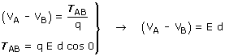

Relación entre campo eléctrico y d.d.p (Campo uniforme)
La d.d.p (VA - VB) es el trabajo que hace el campo cuando una carga cualquiera q se desplaza desde A hasta B dividido por la propia carga q
 |
 |
Observa que los puntos A y B se han tomado en el sentido del campo y que d es el recorrido en la dirección del campo